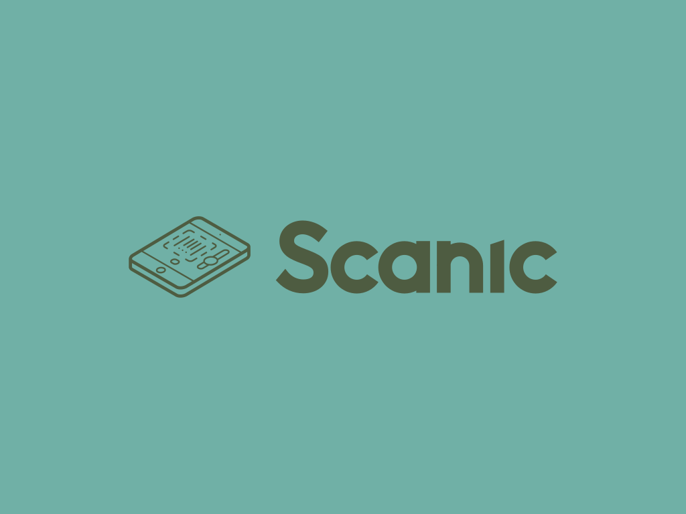

Classical geometry detector: fast, no download.
Drop document image here or click to upload
Detect mode shows a styled corner outline without cropping.
Select detect for corner preview, or extract for perspective crop.